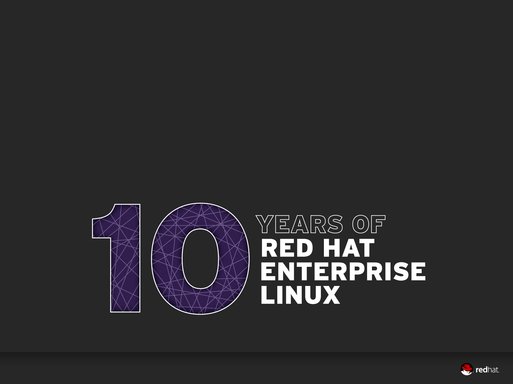
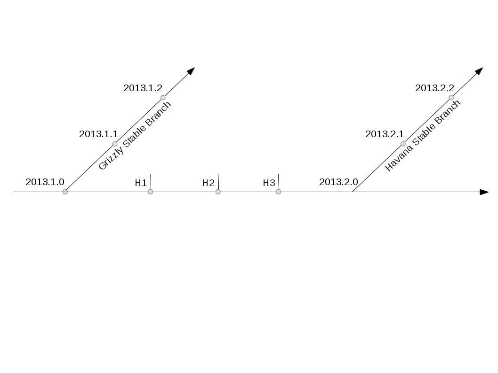
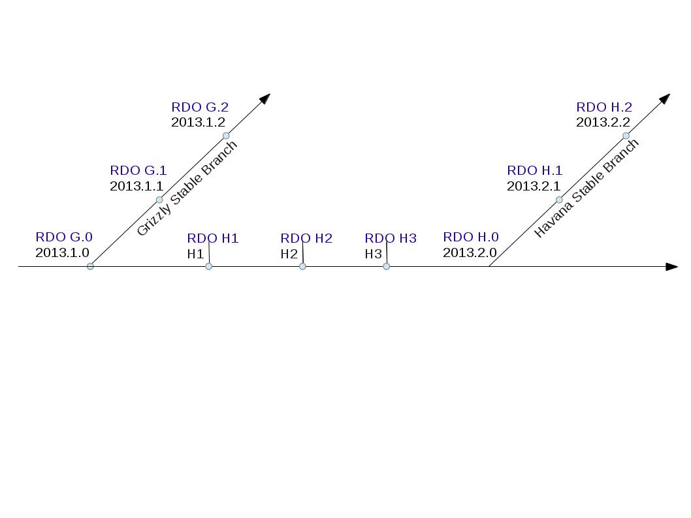
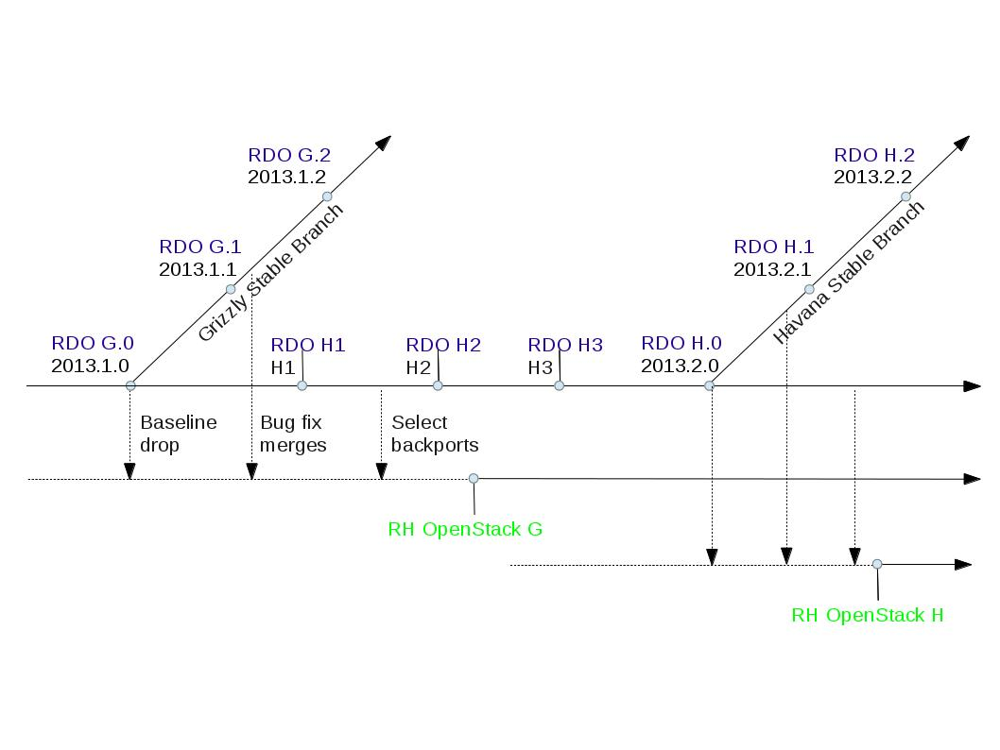
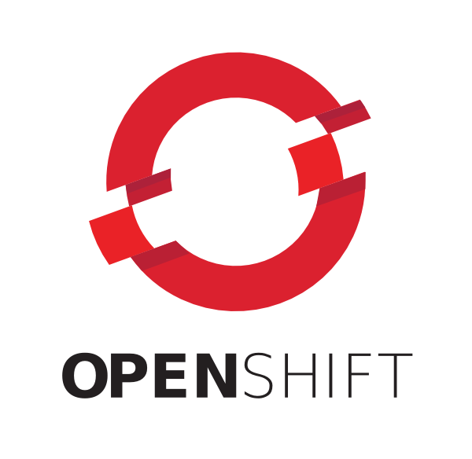
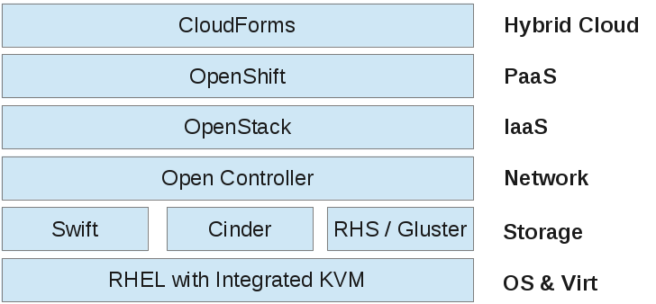
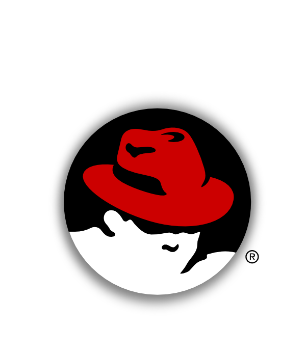

OpenStack @Red Hat
OpenStack Summit Portland 2013
Brian Stevens, @addvin
CTO, VP Worldwide Engineering, Red Hat
Flow: (will be deleted)
lookback over our involvement
our dev model
rdo
rhos early adopters
openshift/openstack demo video
grizzly shoutouts
20 Years of Disruption
2013
BEFORE we talk about TODAY. . .
2012
2011
2010
2010
JC calls me with their idea:
"To produce the ubiquitous Open Source cloud computing platform that will meet the needs of public and private cloud providers regardless of size, by being simple to implement and massively scalable."
2011
June? Red Hat assigns our first developer to start working in the OpenStack community
date and code snip of mark's first patch?
overlay his contrib level
2011
Red Hat assigns our first developer to start working in the OpenStack community
internal cloud proposal on 8/25/11 ...
Support for OpenStack -- Red Hat Confidential – Stevens 8/25/11
"In the last 12 months, the openstack project has executed a great bootstrapping effort where it has quickly become a globally recognized brand and a vibrant, rapidly growing user and development community. In recognition, we need to make some changes across our product strategy, technical architecture, community activity and marketing/comms. These changes can best be summarized as embracing openstack within our development activity, product plans, and partnerships."
People were enthusiastic
"I'm incredibly relieved and excited to see this."
"This is really really good."
"First thought. Wow. Let's do this."
2011
Red Hat assigns our first developer to start working in the OpenStack community
internal cloud proposal on 8/25/11 ...
Diablo release
Rackspace begins discussing spinning up the foundation
2012
Essex release
Birth of the OpenStack Foundation
Red Hat joins at the Platinum level
Folsom release
We were identified as second largest contributor to Folsom
2013
Grizzly release
Red Hat makes and even bigger impact to Grizzly
PAUSE
Lets talk about the Red Hat model
Many variations vendors take on open source:
Some enable optimizations for their hardware
Some use open-core to upsell proprietary add-ons
Some invest in focused areas
Some contribute little and soley ship and support
And some go ALL IN
Red Hat Lifecycle
Shadowman Update
Reached $1.1B in FY12
Is Open Source a Business Model?
No
But it is the best DEVELOPMENT model on the planet
Enables collaboration
Modular innovation which customers can consume incrementally
Open Source is Defining the Future of IT Architecture
Linux
OpenStack
Hadoop
Rails
MongoDB
Git
Cassandra
What do each of these have in common?
They are all examples of next gen IT solutions
They are all open source
They were started by end users and developers, not product companies
The cloud without OSS?
- No Amazon
- No Rackspace
- No Google
- No Yahoo!
- No Salesforce
- No LinkedIn
- No Pandora
- No Twitter
- No Facebook
Introducing RDO
A community distribution of verbatem upstream openstack
Get the latest upstream bits instantly on your server
Packaged for easy installation on RHEL and -EL rebuilds
Upstream milestones
Upstream milestones + RDO
To get RDO, go here:
What about customers?
Last year we announced we would put OpenStack in a subscription model

RHOS - Red Hat OpenStack
the initial release was based on Folsom
we made previews available as a free download
and we collaborated with customers under our lighthouse program
that program handled up to 25 handheld customers
Upstream milestones + RDO
Upstream milestones + RDO + RHOS
RHOS now enters Early Adopter phase
which means standard Red Hat support
and will be available for up to 200 qualified customers
It is the ECOSYSTEM dummy
be nice to have a background pic which shows a core modules with spider webs from it
We know.
So we are building a certified partner program
a slide on what that looks like and who is in it
About a year before we got involved in OpenStack ...
we set out to make developer's lives easier
Developers should be writing code
Without worrying about deployment and infrastructure
and IT needs an architecture of continuous deployment
To help them both we started openshift
Develop in Java, Ruby, P*, Node.js
Use GIT, Eclipse, or a Web IDE
Cartridge stacks from Linux
Security from SELINUX
QoS from CGROUPS
Containers from LXC
250,000+ Active Applications
OpenShiftRunning on OpenStack
OpenShift can elastically flex as the application demand dictates
Video of Demo
Red Hat Cloud Architecture
[Closing out] A closer look at the vibrancy of Grizzly
stats on # devs
# of new projects
rates: frequency of submission and patch reviews?
rates: frequency of jenkins runs?
monty showed me some online page that shows activity
Grizzly
depict how participation is getting much more balanced
Grizzly shoutouts for some standout contributors
slide each for 5 ppl: picture, light bio/likes, what they contrib'd - doesn't need to be code
Thank you
This presentation running on OpenShift
Developed in HTML5 with reveal.js
Brian Stevens, @addvin
